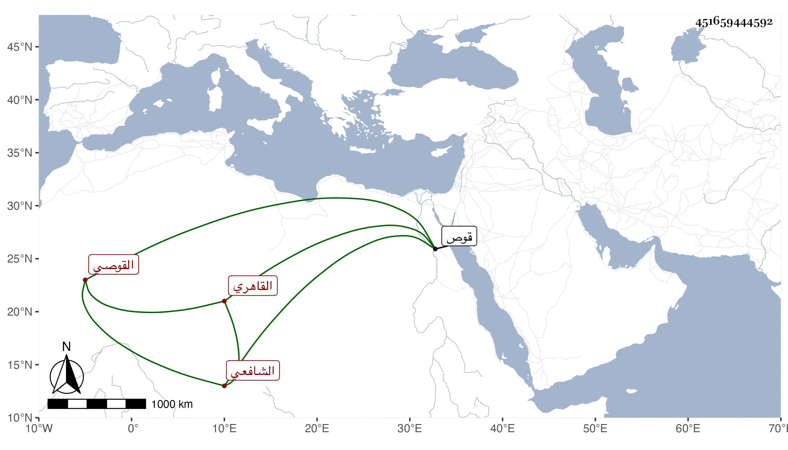

0902Sakhawi.DawLamic.ITO20230111-ara1.EIS1600.451659444592
Biography ID: 451659444592
542
أحمد بن محمد بن محمد الشهاب أبو العباس القوصي ثم القاهري الشافعي ويعرف بابن البلقاسي ثم بالقوصي . ولد بقوص وتحول منها فحفظ القرآن واشتغل ولازم النظم في كتب الشيخ أحمد الزاهد وكأنه أخذ عنه فحفظ منها فوائد خصوصا في ربع العبادة لشدة حرصه على إتقان مسائله ، وجلس للعامة فأوضح لهم كثيرا من مهمات الدين وانتفع به كثير منهم ، وبلغني عن القاياتي أنه كان يقول له أنك قائم عنا بفرض كفاية ، وجمع فوائد نظما ونثرا سمعت من نظمه وفوائده وصليت خلفه وكان يسترزق مما أشرت إليه . ومما كتبته عنه مما أنشدنيه مرارا ما قاله في الدواب التي تدخل الجنة وكتبه عنه ابن فهد أيضا في سنة خمسين وهو :
| يدخل يا صاح دواب عشره | في جنة الخلد بنقل البرره |
| عددهم في نقله مقاتل | حقا ما صححه الأوائل |
أكملتها في موضع آخر ، وكان فقيرا متقشفا قانعا باليسير وتزوج شابة فلم يحصل على طائل . وحصل له رمد أشرف منه على العمى وانقطع بسببه مع ضعف بدنه مدة طويلة حتى مات في ربيع الآخر سنة ستين رحمه الله وإيانا .
